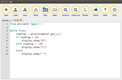

Mu
Dieser Artikel wurde für die folgenden Ubuntu-Versionen getestet:
Ubuntu 16.04 Xenial Xerus
Zum Verständnis dieses Artikels sind folgende Seiten hilfreich:
Mu  (gesprochen: „Mü“) ist ein Editor, der speziell zur Programmierung des ARM-basierten Kleinplatine Micro:Bit mit der Programmiersprache Python 3 entwickelt wird. Das Programm gibt es neben Linux auch für Mac OS X und Windows.
(gesprochen: „Mü“) ist ein Editor, der speziell zur Programmierung des ARM-basierten Kleinplatine Micro:Bit mit der Programmiersprache Python 3 entwickelt wird. Das Programm gibt es neben Linux auch für Mac OS X und Windows.
Mit Hilfe des Mu-Editors können nicht nur Python-Programme geschrieben und auf das Board hochgeladen werden, es wird auch ein interaktiver Modus in Form eines Read-Eval-Print-Loops zur Verfügung gestellt.
Der Editor macht Vorschläge für die Vervollständigung von Befehlen und zeigt bei Funktionen die zur Verfügung stehenden Parameter an. Eine Syntaxhervorhebung ist vorhanden und Zeilen mit fehlerhafter Syntax können markiert werden, damit Fehler leichter zu finden sind. Außerdem werden Reiter unterstützt, so dass mehrere Programme gleichzeitig geöffnet sein können. Die Optik lässt sich zwischen einem hellen und dunklen Oberflächenthema umschalten.
Installation¶
Mu ist nicht in den offiziellen Paketquellen vorhanden. Auf der Projektseite kann man den Editor als einzelne Binärdatei für Linux herunterladen  . Die Datei kann man in ein beliebiges Verzeichnis speichern (z.B. das eigene Homeverzeichnis) und muss diese anschließend noch ausführbar machen[1].
. Die Datei kann man in ein beliebiges Verzeichnis speichern (z.B. das eigene Homeverzeichnis) und muss diese anschließend noch ausführbar machen[1].
Hinweis!
Fremdsoftware kann das System gefährden.
Benutzung¶

Zum Starten von Mu wechselt man ins Verzeichnis, wo die heruntergeladene und ausführbare Datei liegt. Den Editor startet man dann über den Aufruf[2] von mu-VERSION.linux.bin (wobei die VERSION entsprechend anzupassen ist).
Die Oberfläche des Editors ist sehr übersichtlich. Es gibt keine Menüs, alle Funktionen sind direkt über die Schaltflächen in der Werkzeugleiste oberhalb des Eingabebereichs des Editors erreichbar. Deren Beschriftung ist selbsterklärend.
Speichert man Programmcode, wird dieser im Ordner ~/mu_code/ im Homeverzeichnis des jeweiligen Benutzers abgelegt.
Ein Klick auf "Flash" lädt das Programm im aktuell sichtbaren Reiter auf den Micro:Bit, wo der Code direkt ausgeführt wird. Mit einem Klick auf "REPL" öffnet sich unterhalb des Eingabebereichs eine interaktive Konsole. Hier können Befehl eingegeben werden, die dann ebenfalls direkt auf dem Micro:Bit ausgeführt werden.
Problembehebung¶
REPL funktioniert nicht¶
Bekommt man bei einem Klick auf die Schaltfläche "REPL" eine Fehlermeldung, dass auf den Micro:Bit nicht zugegriffen werden kann, dann fehlen die notwendigen Rechte. Der Benutzer muss Mitglied der Gruppe dialout sein, um den interaktiven Programmiermodus nutzen zu können. Fügt man den Benutzer der Gruppe hinzu[3] und meldet sich ab und wieder an, dann sollte auch der Read-Eval-Print-Loop funktionieren. Ohne Ab- und erneute Anmeldung funktioniert es mit dem Befehl newgrp.
- Erstellt mit Inyoka
-
 2004 – 2017 ubuntuusers.de • Einige Rechte vorbehalten
2004 – 2017 ubuntuusers.de • Einige Rechte vorbehalten
Lizenz • Kontakt • Datenschutz • Impressum • Serverstatus -
Serverhousing gespendet von